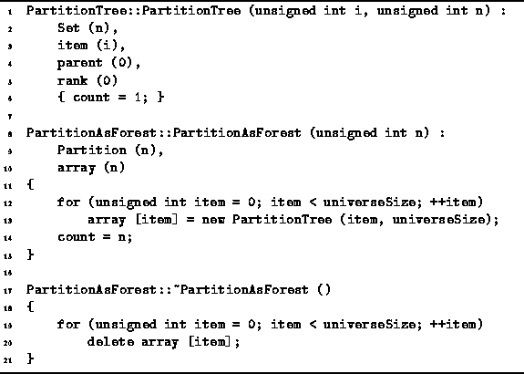
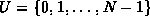

Data Structures and Algorithms
with Object-Oriented Design Patterns in C++
Data Structures and Algorithms
with Object-Oriented Design Patterns in C++
Program  gives the code for the PartitionTree constructor.
The constructor creates a tree comprised of a single node.
It takes an argument which specifies the element of the
universal set that the node is to represent.
The parent field is set to zero to indicate that the node has no parent.
Consequently, the node is a root node.
Finally, the rank field is initialized to zero.
The running time of the constructor is O(1).
gives the code for the PartitionTree constructor.
The constructor creates a tree comprised of a single node.
It takes an argument which specifies the element of the
universal set that the node is to represent.
The parent field is set to zero to indicate that the node has no parent.
Consequently, the node is a root node.
Finally, the rank field is initialized to zero.
The running time of the constructor is O(1).

Program: PartitionTree and PartitionAsForest Class Constructor and Destructor Definitions
Program also shows the constructor and destructor for
the PartitionAsForest class.
The constructor takes a single argument N
which specifies that the universe shall be .
It creates an initial partition of the universe consisting of N parts.
Each part contains one element of the universal set
and, therefore, comprises a one-node tree.
The PartitionAsForest is a container
and the PartitionTree instances that the constructor creates
are the contained objects.
The destructor is responsible for deleting the objects in the container. I.e., it deletes all the PartitionTree instances that were created in the constructor. Both the constructor and destructor run in O(N) time, where N is the number of elements in the universe.
 Copyright © 1997 by Bruno R. Preiss, P.Eng. All rights reserved.
Copyright © 1997 by Bruno R. Preiss, P.Eng. All rights reserved.